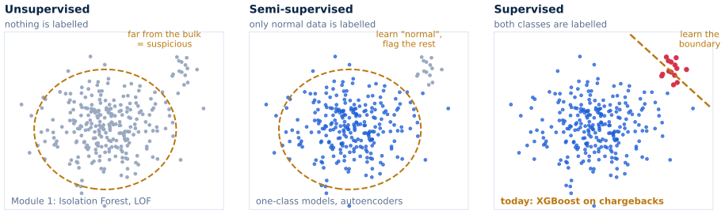
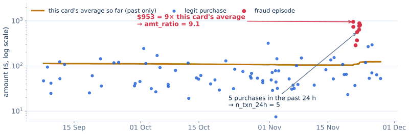
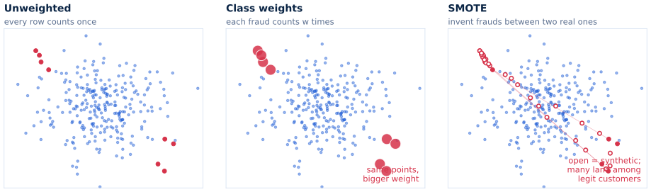
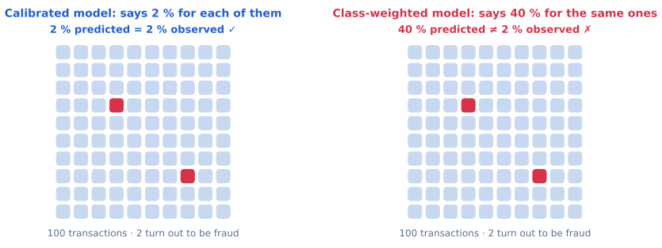
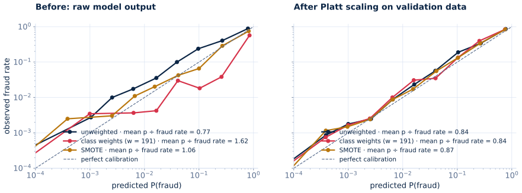
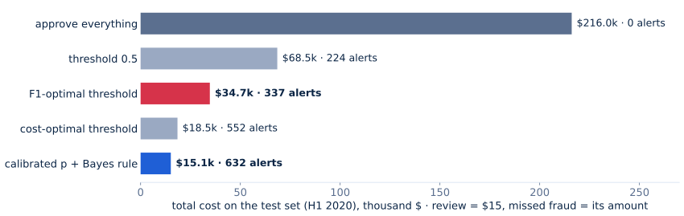
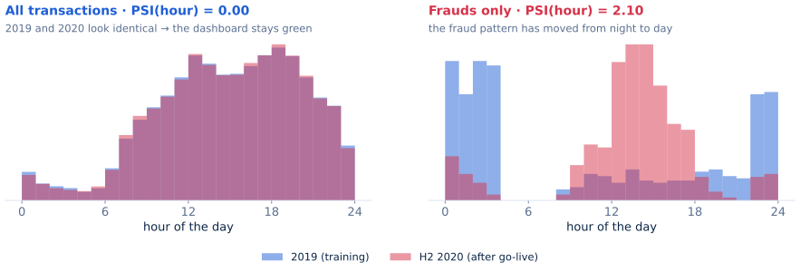
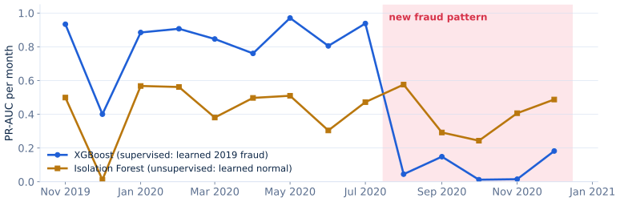
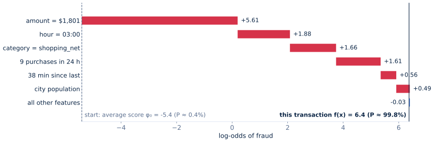

Trend / seasonality / residual · sliding-window features · dynamic z-score vs. Isolation Forest on NYC taxi demand.
What you'll be able to do in one hour
MODULE 2 · today's objectives
By the end of this block you can…
Explain what SMOTE and class weights really do, and why a probability must be calibrated
Decide with money, not F1: flag when p × amount is larger than the cost of a review
Recognise concept drift, and use an unsupervised detector as a safety net
Explain a single alert with SHAP, and read the explanation critically
The question of the day
Not "is this transaction unusual?", but "is it worth stopping, given what each mistake costs, and can we defend that decision to an auditor?"
Before any model: a decision
A QUESTION WORTH $1,800
Two alerts, one analyst. Which do you review?
amount $1,801
time 03:12
merchant shopping_net
card avg $94 (19× usual)
P(fraud) 0.30
amount $22
time 14:40
merchant grocery_pos
card avg $61
P(fraud) 0.45
A review costs ~$15. The right-hand alert is more likely fraud, but its expected loss is 0.45 × $22 ≈ $10, less than the review. The left one: 0.30 × $1,801 ≈ $540.
Why fraud is harder than Module 1's anomalies
Part 1 — The domain
Fraud is not just "imbalanced classification"
Module 1 asked whether a point is unusual. In fraud, the unusual points cost money, fight back, and must be explained.
FOUR PROPERTIES · each one breaks a default
What makes fraud hard
Extreme imbalance
~0.1–0.6 % positives. Accuracy is meaningless; even PR-AUC is noisy with a few hundred frauds.
breaks: default loss, default threshold
Unequal costs
Missing a $3 fraud ≠ missing a $3,000 one. Every review costs analyst time.
breaks: F1, any count-based metric
Adversarial drift
Fraudsters adapt to the model. Labels arrive 30–90 days late, mostly for what you flagged.
breaks: random splits, "train once"
Accountability
Investigators, validators, auditors and customers all ask "why?"
breaks: "the model said so"
One difference changes the method: here, we get labels
FROM MODULE 1 TO TODAY · is this still anomaly detection?
Labels change the method, not the problem

In fraud, labels exist: chargebacks, disputes, every reviewed alert. So we can learn directly: supervised.
But labels come 30–90 days late, mostly for what we checked, and new fraud has none yet. Module 1's detectors return in Part 4.
So we train a classifier. First: what does it see?
WHAT THE MODEL SEES · a real card from the lab data
Describe behaviour, not just the transaction

amt_ratio amount ÷ the card's average so far n_txn_24h purchases in the past 24 h Golden rule: use the past only.
train · Jan–Oct 2019
val · Nov–Dec
test · Jan–Jun 2020
future (deployment) · Jul–Dec 2020
How a boosted model learns from these features
GRADIENT BOOSTING · press play, then change the learning rate
Each small tree fixes what is still wrong
—
hm: a depth-2 tree fitted to the residuals y − p. η: how much of it we keep.
trees m 0
training loss —
held-out loss —
best held-out —
The model is trained. But fraud is under 1 % of the data. Does that need fixing?
Part 2 — Imbalance
SMOTE or class weights?
Fraud is under 1 % of transactions, and every tutorial "fixes" that first. What does the fix really do?
ONE IDEA, THREE TOOLS · make fraud count more
Three ways to make fraud count more

ci = how much row i counts. Weights change ci; SMOTE adds rows instead. None of them adds information.
The most famous tool first: SMOTE
SMOTE · xnew = xi + λ (xnn − xi), λ ~ U(0,1)
Interpolation assumes the minority is convex
synthetic frauds 0landed in legit territory —
Weights invent nothing, but they change what p means. First: what should p mean?
BEFORE WE GO ON · what "calibrated" means
A probability should mean what it says

Like a forecast: "30 % rain" should mean rain on ~30 % of those days
PR-AUC cannot see it. Costs can.
Fix: Platt scaling, , fitted on validation data
Now watch class weights break it
CLASS WEIGHTS · drag the weight
Class weights move the threshold, and break the probability
—
p = true probability of fraud (grey line: an honest model reports p itself) pw = probability reported by a model trained with fraud weight w (red curve)
0.5 on pw ≡ p = —
true 0.5% risk reported as —
Elkan (2001) · Saerens et al. (2002). Exact for an ideal model. On real boosted trees, simply recalibrate on validation data (Platt).
Does it show up on the lab's model?
WHAT THE LAB SHOWS · XGBoost, test set (H1 2020)
Same ranking, broken probability, and an easy repair

PR-AUC: 0.87 · 0.86 · 0.87, so no information was added. Production default: no rebalancing (or weights) + recalibrate. SMOTE only for learners that can't take weights, such as k-NN.
synthetic Sparkov-like data · Module2_Lab_INSTRUCTOR.ipynb, Part B · Carriero et al. 2025 · van den Goorbergh et al. 2022
Your turn: two quick cases
PULSE 1 · pick the imbalance strategy
SMOTE, weights, or neither?
The sensor lab
A k-NN detector on 6 continuous vibration features. 0.8 % faults. The library has no sample-weight option.
The bank
XGBoost on 180 mixed features, retrained nightly. Its score is sent to a pricing engine that treats it as P(fraud).
We have a probability we can trust. What do we do with it?
Part 3 — Cost-sensitive decisions
A score is not a decision
We now have a probability we can trust. Back to the two alerts from the start: to decide, we need the money.
THE BUSINESS METRIC · example-dependent costs
What does each decision cost?
flag → review
approve
is fraud
Cinv fraud stopped
amt chargeback
is legit
Cinv + Cfric wasted review
0
Savings (Bahnsen et al., 2014)
Report it next to PR-AUC. Also report $-recall: the share of fraud dollars stopped.
With these costs, the best decision fits in one line
THE DECISION RULE · Elkan, 2001 · Höppner et al., 2022
Flag when approving is expected to cost more
alert A $1,801 · p = 0.30
0.30 × 1,801 = $540 > $15
→ review
alert B $22 · p = 0.45
0.45 × 22 = $10 < $15
→ approve
A threshold per transaction: . Needs a calibrated p; nothing is tuned on labels.
How much does it beat the F1 threshold? Let's simulate
THRESHOLD vs. BUSINESS COST · 20,000 simulated transactions
F1 doesn't know what a dollar is
$15
t —cost @ t —F1 @ t —alerts —cost @ F1-opt —cost @ cost-opt —Bayes rule —
Why no single threshold can win: put the amount on an axis
THE DECISION BOUNDARY · flag everything above the curve
A global threshold is a horizontal line. The Bayes rule is not.
$15alerts —recall —$-recall —cost —
Does it hold on the lab data?
WHAT THE LAB SHOWS · test set, H1 2020
The decision rule is worth more than the model trick

Same model, five ways to decide. F1-optimal − Bayes = $19.6k, 95 % CI [$9.2k, $32.2k] (bootstrap by card).
synthetic Sparkov-like data · Module2_Lab_INSTRUCTOR.ipynb, Part C · same conclusion on 9 real datasets: Vanderschueren et al., 2022
All of this assumes the model knows the fraud. Does it stay that way?
Part 4 — Drift
Fraudsters adapt
Our decisions are now cost-optimal, for the fraud the model already knows. What happens when the fraud changes?
Labels arrive 30–90 days late, mostly for what we flagged. So always split by time: a random split scores 0.91 PR-AUC in the lab, a temporal one 0.87.
Could a monitoring dashboard have warned us?
REAL DRIFT CAN BE INVISIBLE · lab Part D
Would input monitoring have warned us?

PSI compares a feature's histogram now vs. at training (> 0.25 = big shift). Fraud is < 1 % of traffic: it can change completely while the inputs look the same.
If the inputs can't warn us, what can? Module 1's detectors
TWO WAYS TO BE RIGHT · lab Part D
Learn fraud, or learn normal?

XGBoost + Bayes
after the change: $49.8k cost
Isolation Forest
top 0.5 %: $52.4k cost
Either one flags
$34.0k: an insurance that pays out under drift; costs +$1.6k if nothing changes
Every alert we raise needs a reason
Part 5 — Explainability
"Why was my card blocked?"
We can score, calibrate, decide and stay alert. The last property from Part 1: accountability.
WHO ASKS "WHY?" · and what they need
A bare score of 0.93 serves nobody
Investigator
a concrete reason to call the customer about
Model validation
proof the model uses sensible signals, not shortcuts
Auditor
a reproducible trail for every decision
Customer
"meaningful information about the logic" (GDPR Art. 22)
Precision matters: the EU AI Act (Reg. 2024/1689) excludes fraud detection from its high-risk credit-scoring category (Annex III 5(b)), an exception the 2026 draft guidelines read narrowly. Black boxes in fraud are not illegal per se. They are unacceptable in practice.
How to split one score fairly among the features
SHAP · Lundberg & Lee, 2017
Split one score fairly among the features
SHAP = SHapley Additive exPlanations. For one prediction, it gives each feature a number: how far that feature pushed this score away from the average score.

SHapley: a fair share from game theory (Shapley, 1953), the feature's average contribution over every order the features could join. Additive: average + shares = the model's score, exactly. exPlanations: local, one transaction at a time. Units: log-odds.
Three alerts, three stories
EXPLAIN AN ALERT · exact SHAP for a linear logit: φj = wj(xj − E[xj])
Weights were fitted to "2019 fraud": night, big amounts, bursts. Far-away purchases were mostly legit travel.
Powerful. Now: how it can mislead
READ SHAP CRITICALLY
Three ways to over-read an explanation
Model ≠ world. "Night pushed it up" describes the model, not a cause of fraud.
Log-odds, not %. The shares add up in log-odds; in probability they do not.
No guarantees. Explanations can be gamed (Slack et al., 2020), and can provably miss a spurious feature (Bilodeau et al., PNAS 2024). Treat them as hypotheses to test.
But: it may reveal a shortcut
In the lab's synthetic data, city population, age and gender are independent of fraud, yet SHAP gives them weight. The trees memorised the cardholders attacked in 2019: a card fingerprint.
No aggregate metric showed it. SHAP is a model audit tool as much as a customer-facing one.
Your turn: diagnose two models
PULSE 2 · diagnose the model
What went wrong?
The expired reason
For a confirmed 2020 fraud, SHAP says "merchant 900 km from home" pushed the score down. In 2019 most distant purchases were legitimate trips.
The optimistic split
Same XGBoost, same data: PR-AUC 0.91 with a random split, 0.87 with a temporal one.
To the lab — Module 2
From scores to defensible decisions
One hour · five ✏️ exercises · Sparkov card transactions
READING LIST · foundations and recent work
Key literature
Foundations
Cost-sensitive: Elkan (2001), IJCAI · Bahnsen et al. (2014), ICMLA
Imbalance: Chawla et al. (2002), JAIR · Elor & Averbuch-Elor (2022) · van den Goorbergh et al. (2022), JAMIA